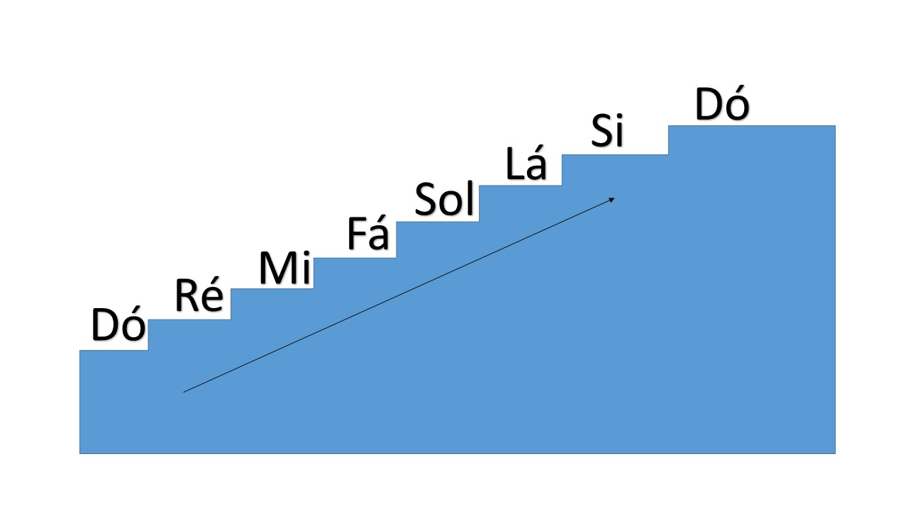
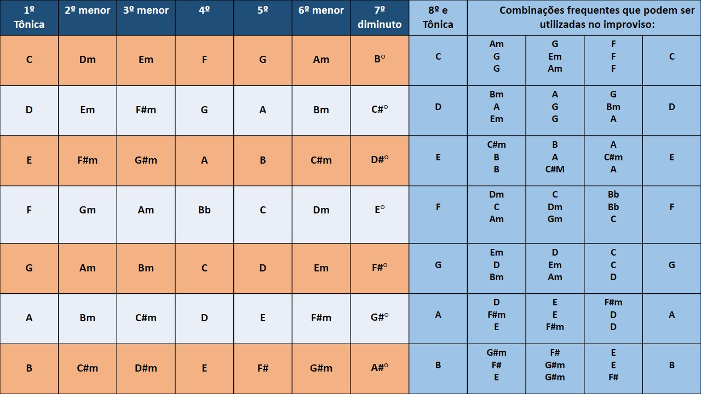

- Home
- >
- Conteúdo
- >
- Teoria
Escalas / campo harmonico / métodos
Em algum momento das nossas vidinhas já nos deparamos com estes sons:
7 notas musicais:
Dó - Ré - Mi - Fá - Sol - Lá - Si
Cifras
Dó=C - Ré=D - Mi=E - Fá=F - Sol=G - Lá=A - Si=B
São os códigos que utilizamos para nomear os sons. Imagine uma escada o primeiro degrau é o dó e o último o si, agora acrescente um som grave para o primeiro degrau. Conforme avança degrau acima as notas tornam-se mais agudas, no último degrau o som é o mais agudo da escada.
E se por acaso eu substituisse o "d" de escada por um "L" de escala?
Teremos então, a escala de Dó maior a medida que subimos os degraus o som torna-se mais agudo.
O dó se repete no final, pois é uma oitava, mas não se apegue a isso agora.
Escala Maior
A numeração é referente é referente ao grau da escala, lembra a escada ali encima.
Portanto o número 1 é o tom principal e o número 8 é sua extenssão, a grosso modo, são iguais, só que o oitavo grau é mais agudo.
Os graus que possuem '#' e 'b' são acidentes, sim acidentes músicais. Não irei extender aqui este assunto. Mais fotografe isso com sua mente '#' e 'b' são acidentes.

Campo harmônico e combinações
Sabe aquela música que gruda na cabeça? Vira hit de verão e você não consegue esquecer... Provavelmente ela foi criada com uma destas combinações harmonicas. Na parte azul da img, estão as combinações mais utilizadas na música, se você decorar isso pode tocar ou adaptar a maioria das músicas que escutar.
Quando você aprender a tocar vai ficar impressionado o quanto algumas músicas de sucesso são super facies de reproduzir.
Vai ficar espantado com a genialidade de algumas produções, "dificil é fazer o fácil, as vezes".
Video aula
←Voltar